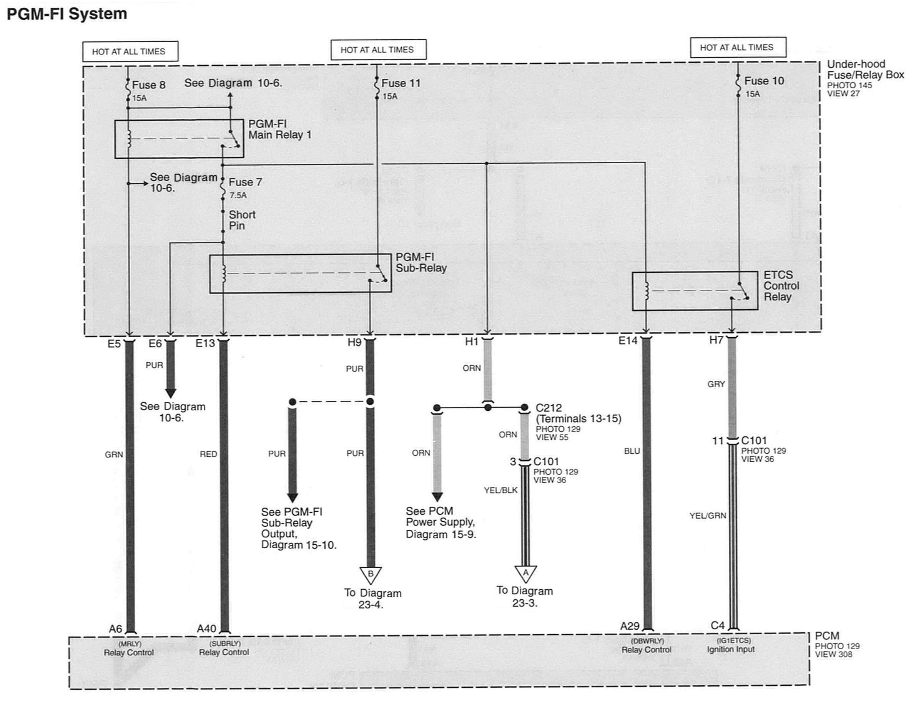

Diagram 23-2
Diagram 23-2:

Next Diagram Diagram 23-3
Previous Diagram Diagram 23-1
Diagrams: Other diagrams referred to by number (See Diagram ##-#, etc.) within these diagrams can be found at Diagrams by Number. Diagrams By Number
Locations: Location photographs (references to PHOTOS) referred to within these diagrams can be found at Locations by Photo Number. Locations By Photo Number
Connector Views: Connector terminal views (references to VIEWS) referred to within these diagrams can be found at Connector Views by View Number. Connector Views By View Number